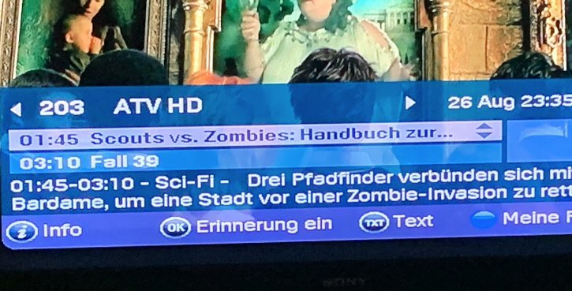

Hallo @Blackraven , da hast du viel Zeit investiert.
Ich gebe dein Feedback mit der Auflistung natürlich verlässlich weiter.
Garantieren oder zusagen kann ich aber nichts. LG Karo
Hi Karo,
Das war nur Teil I meiner Fehler-Zusammenstellung. Ich wollte nur einmal sehen, ob das überhaupt wer liest. Ist ja ein elendslanges pdf. Ich hätte aber noch fünf weitere Teile mit Genres Thriller, Sci-Fi, Dokumentation, Gameshow(s), Abenteuer, Spielfilm, Musical, Unterhaltung oder Komödie. Das wird alles falsch oder sagen wir "kreativ" verwendet. Sollte eigentlich für Magenta peinlich sein. Im On-Demand-Dienst kriegt ihr das richtig hin. Aber im TV-Guide nicht. Und der Magenta-Techniker, mit dem ich am Telefon gesprochen habe, hat gesagt, dass es ihnen aber Wurscht ist. Eine Stilblüte noch zum Beleg. Beim Shopping-Kanal QVC 2 stand drunter Wirtschaft. Da muss einmal richtig umgekrempelt werden.
Hallo @Blackraven , natürlich werden die Beiträge gelesen 😉 .
Ich habe dein PDF auch weitergegeben.
Das zuständige Team geht dem nach und bemüht sich um Anpassung. LG Karo
und … Falsche Genres Teil VI.pdf
Super. Und danke. Ich habe erst geglaubt, dass du, Karo, ein KI-Programm bist. Aber ich glaube nicht, dass ein KI-Programm einen Smiley an einen Satz hängt 😊
Zu der Fehler-Sammlung: Das war nur eine Auswahl. Nachdem ich vergangenes Jahr draufgekommen bin – oder besser – einmal beim Zappen richtig hingeschaut habe, ist das "Suchen der Fehler" zu einem richtigen Hobby geworden. Ich habe in der hochgeladenen Sammlung viele Screenshots und meine kurzen Erklärungen dazu löschen müssen, weil ja nur 9,77 MB in das Feld reingehen. Gesplittet sind es jetzt sechs Teile.
Ich kann mir schon denken, dass bei so vielen Fernsehkanälen hin und wieder die Zeit fehlt, um das eine oder andere genauer zu recherchieren. Eine zeitlang hab ich auch gedacht, dass da irgendein System dahintersteckt. Oder ein verschenkter Humor.
Hab an Magenta auch vor ein paar Monaten eine Initiativbewerbung geschickt, weil ich mir gedacht habe, für den TV-Guide braucht ihr Unterstützung. Auf eine Antwort warte ich noch immer.
Jedenfalls cool, dass die Fehlerbehebung jetzt angegangen wird. Zumindest werden meine Infos dazu hoffentlich alle weitergeleitet.
LG Blackraven
Hi @Blackraven , sei versichert, ich bin eine "echte" Person aus Fleisch und Blut 😉 .
Respekt, welche Arbeit und Mühen du in das Thema steckst.
Wie geschrieben, habe ich es weitergegeben.
Falls du an einem Job bei Magenta interessiert bist (unabhängig vo dem Thema), findest du hier https://www.magenta.at/karriere/start alle Infos für einen Start und auch ausgeschriebene Stellen. Viel Erfolg auf deinem weiteren Weg 👋 . LG Karo
Hi Karo, noch ist leider bei euren Genres im TV-Guide nix passiert. Sendungen wie der Tatort sind noch immer Drama, der Shoppingkanal QVC noch immer Wirtschaft. Das ist peinlich und traurig, aber wahrscheinlich liegt den Entscheidern bei euch nix dran das korrekt hinzubekommen. Oder gibt es einen anderen Grund?.
Wer macht eigentlich die Texte für den TV-Guide? Falls ein KI-Programm dafür verantwortlich ist, müsste es ordentlich nachgeschärft werden. Ich gehe einmal davon aus, dass das ein KI-Programm macht. Oder Menschen mit einer Gabe für eine besondere Kreativität. Allerdings haben die Macher leider auch keine Ahnung von Geschichte. Gestern war auf Puls24 zu lesen:
Da habe ich mir gedacht: Aha. einmal was Neues. Vielleicht haben Historiker neue Quellen gefunden und der Zweite Weltkrieg ist doch irgendwie anders ausgegangen, wie ich das im Geschichtsstudium gelernt habe. Hab dann auch den Text, der anscheinend für die Kurzbeschreibung verwendet worden ist im Internet gefunden.
"6. Das Ende (The Drive To Victory)
Staffel 1, Folge 6
jetzt ansehen
Die deutschen Truppen setzen zu einem letzten Verzweiflungsschlag an, der Ardennenoffensive, mit der sie versuchen, den Hafen von Antwerpen zurückzuerobern."
Das steht auf Fernsehserien.de und ist so auch historisch korrekt. Bei der Ardennenoffensive sind die [***] nämlich gar nicht bis Antwerpen gekommen. Aber so wie es im Guide gestanden ist, haben sie dort noch gekämpft. Ich habe mir die Sendung dann bis zum Schluss angeschaut. Da war dann auch später nix mehr in Antwerpen ...
LG Blackraven
Obwohl ich euch mit meiner langen Fehlerauflistung bereits vor Wochen informiert habe, welche Filmgenres im TV-Guide falsch verwendet werden, ist bis dato nichts passiert. Ein „Tatort“ ist noch immer ein „Drama“, der Shopping-Kanal QVC „Wirtschaft“, etc.
Mit viel Sinn für Humor könnte man die bewussten falschen Genreangaben auch witzig finden. Gestern stand etwa bei einer DOKUMENTATION über Sophia Loren, die auf ORF 2 nachts lief: „Bildende Kunst“. (leider kein Screenshot vorhanden)
Aber hier Screenshots von gestern:
Ein Filmgenre, das Kinder/Jugend heißt, gibt es nicht. Wenn man die TV-Guide-Information so liest, dass der Film FÜR Kinder und Jugendliche ist, weiß der Verfasser des Guides nicht, dass die Harry Potter-Filme eigentlich alle erst AB 12 sind.
Klar haben die Bücher und Filme einen wahnsinnigen Run vor allem unter der jüngeren Zielgruppe ausgelöst. Aber die Filme sind definitiv nix für Kinder. Ich habe selbst einen Film im Kino gesehen und hinter mir saß eine Familie mit kleinen Kindern. Die haben fast den ganzen Film über gequengelt, dass er so schiach ist und dass sie nachhause wollen. Nach dem Film habe ich mir überlegt, ob ich das Geld für die Kinokarte von den Eltern zurückfordern soll, weil mich die Quengelei ihrer Kids – für kleine Kinder können die Filme schon sehr, sehr aufregend sein – beim entspannten Filmgenuss gestört haben.
Und die Eltern, die gestern ihren Kindern erlaubt haben, den Harry-Potter-Film zu sehen, können sich beim Verfasser des TV-Guides für schlaflose Nächte, in denen sie ihren Kindern erklären müssen, dass das Monster eh nicht zu ihnen ins Bett kommt, bedanken.
Denn ein Kind ist der Mensch – per definitionem – bis zur Geschlechtsreife. Und die Pubertät setzt zwischen elf und dreizehn Jahren ein.
Das korrekte Filmgenre – wenn wieder ein Harry-Potter-Film laufen sollte – verrate ich euch. Das heißt FANTASYFILM. Aber das Genre FANTASY gibt es im ganzen TV-Guide nicht. Warum?????
Und gleich der Film danach:

Das ist eine HORRORKOMÖDIE!!!!!!!!!! Aber das dazu im Magenta-TV-Guide angegebene Film-Genre „Sci-Fi“ beweist wunderbar, dass die Macher des Guides keine Ahnung von Film-Genres haben.
„Sci-Fi“ ist die Abkürzung für „Science Fiction“. In unsere Muttersprache übersetzt bedeutet das „erfundene Wissenschaft“.
Der Beschreibungssatz dahinter ist diesmal korrekt, allerdings müsste jedem, der ihn noch einmal auf Fehlersuche durchliest, das Genre davor suspekt vorkommen. Denn Zombies haben mit Wissenschaft – auch mit erfundener Wissenschaft – nichts zu tun. Zombies, Wiedergänger, Untote oder auch Vampire sind Aberglaube. Aber natürlich durch Filme, Bücher, Games, Comics, etc. ein fixer Bestandteil unserer Realität. Auch wenn es sie nicht gibt.
„Science Fiction“ ist dagegen etwa das vielzitierte Beamen in „Raumschiff Enterprise“. Also eben erfundene Wissenschaft.
Aber es wundert mich überhaupt nicht, dass „Sci-Fi“ für diesen Film gewählt wurde, weil alle Filme, in denen etwas vorkommt, was nicht von unserer Welt ist, im Magenta-TV-Guide „Sci-Fi“ sind. Auch der Film „Dragonheart“, der vor ein paar Monaten lief, wurde im Guide als „Sci-Fi“ bezeichnet.
Und noch ein Screenshot von gestern:
Diesmal ist es Kritik auf hohem Niveau. „Talk-Show“ stimmt nämlich sogar. Allerdings verrät ein Blick auf duden.de, dass man das Wort im Deutschen zusammenschreibt. Also „Talkshow“.
Aber ich bin schon glücklich, dass zumindest das Fernsehgenre stimmt. Bei Talkshows auf Oe24 steht immer „Unterhaltung“. Und lustiger ist dort das Gerede nicht.
Werter Herr Dorian,
Ich frage mich, ob es an meiner uralten (noch) UPS-TV-Box liegt, dass bei mir Angaben im TV-Guide falsch angezeigt werden. Wenn ich abends durch die Programme zappe, fallen mir 30 oder 40 Fehler im Guide auf. Und das jeden Tag.
Vor allem stimmen viele die Film- und TV-Genres nicht. Beispiele:
Ein Tatort ist immer ein DRAMA.
Der Alte, Polizeiruf 110, alle amerikanischen Krimi-Reihen – sogar Columbo – oder die Rosenheim-Cops sind immer THRILLER.
Fantasy-Filme sind immer SCI-FI.
Eine Reality-Show, wie etwa „Ich bin ein Star, holt mich hier raus“ gelten als WEITERBILDUNG.
Eine Quiz-Sendung hat immer das Genre: Gameshows (Plural!!!)
Filme, wie James-Bond-Streifen, „Der Soldat James Ryan“ oder gestern „Rambo: Last Blood“ sind ABENTEUER. Übrigens auch Slapfight-Sport-Berichte auf dem Kanal Sport 1.
Viele Seifenopern oder Dokus, wie GZSZ, Dr. G., sogar „Das perfekte Dinner“ oder „Die Geissens“ sind im TV-Guide ein SPIELFILM.
Die Genres Krimi, Fantasy, Reality-TV, Quizshow, Gameshow (Singular), Action, Daily-Soap, etc. gibt es im Magenta-TV-Guide gar nicht. Warum???
Und auch die kurzen Beschreibungssätze nach den Genres stimmen oft nicht. Sie sind oft nur ein Satz einer aus dem Internet abgekupferten Handlungsbeschreibung, der aber nur die ersten zehn Minuten des Films beschreibt. Gestern war etwa bei dem Film „Universal Soldier“ zu lesen: „Während des Vietnamkriegs will der Soldat Luc Devereux Sergant Scott an einer Exekution hindern.“ Dass sich die beiden dabei töten, im Universal-Soldier-Programm zu wiederbelebten Supersoldaten „gespritzt“ werden und dann bekämpfen – was eigentlich der Plot des Filmes ist – kommt im TV-Guide nicht vor. So, wie es dasteht, könnte ein unwissender Zuschauer denken, dass es sich bei dem Film um einen von vielen Vietnam-Kriegsfilmen handeln muss.
Gestern „Rambo: Last Blood“. Darunter stand zu lesen: Abenteuer – In Mexiko muss Rambo Gabrielle retten
Das war alles. Nicht mal ein Punkt am Ende des Satzes! Nicht nur das Filmgenre ist falsch, Rambo: Last Blood ist ein Action-Thriller (Wikipedia, IMDb), der anscheinend abgerissene Satz setzt auch voraus, dass der Zuseher wissen muss, wer Gabrielle ist. Zugegeben, die familiäre Situation und Beziehung in der Rambo zu ihr steht, ist ein bissl tricky, wenn man nur Platz für einen kurzen Satz hat. Denn sie ist die Enkeltochter seiner Haushälterin, zu der er ein väterliches Verhältnis hat.
Besser vielleicht: In Mexiko muss Rambo seine Ziehtochter aus den Fängen eines Menschenhändlerringes befreien.
Ich habe übrigens lange vermutet, dass der TV-Guide von einem KI-Programm erstellt wird. Allerdings denke ich, dass eine vernetzte KI Film- oder TV-Genres nicht in andere, nichtzutreffende Genres umändern und falsch anführen würde. Da muss ein Team aus Fleisch und Blut dahintersitzen und bewusst etwa die Rosenheim-Cops-Krimiserie zum Thriller adeln. Warum???
Mit einem Techniker auf 0676 200 7777 habe ich übrigens auch schon gesprochen. Der hat gesagt, „dass der TV-Guide schon von Magenta erstellt wird, aber die Technik hätte keinen Zugriff, um etwas zu ändern. Und wenn nur die Genres falsch sind, ist das eh wurscht“. Zitat Magenta-Techniker.
Können diese vielen fehlerhaften Angaben nur an meiner uralten TV-Box liegen? Wenn ja, müsste diese getauscht werden. Und warum fallen anderen zahlenden Kunden diese vielen Fehler nicht auf? Oder doch?
Im Anhang die beiden Screenshots von gestern zum Beleg. Screenshots mit fehlerhaften Angaben habe ich übrigens viele gesammelt. Ihr müsst aber auch schon einige davon im Community-System haben.
Du hast diese Frage schon hier
Warum kriegt ihr den TV-Guide nicht korrekt hin?gestellt.
Warum nochmal dieselbe Frage in einem weiteren Thread?
Weil ich eine Antwort auf die Frage erhalten möchte. Sind dir ebenfalls Fehler im TV-Guide aufgefallen?
Am 30.8.2024 um 13:48 schrieb Blackraven:Weil ich eine Antwort auf die Frage erhalten möchte. Sind dir ebenfalls Fehler im TV-Guide aufgefallen?
Ja, auch auf der "sogenannten" neuen TV-Box auf Android Basis ist der TV-Guide alles andere als korrekt dargestellt.
Aber möglicherweise sitzen gerade in diesem Bereich einige, denen das Magenta TV gehabe, völlig wurscht sein dürfte!
Das habe ich mir auch schon gedacht. Und das ist traurig. Denn schließlich bezahlen wir als Kunden den TV-Guide-Dienst. Und da darf man schon erwarten, dass der korrekt oder zumindest einigermaßen korrekt ist. Aber bei so viel Unsinn, der da drinsteht … Ein Drittel der Angaben sind falsch. Und das täglich.
{kind=link}
{kind=link}
{kind=link}
{kind=link}